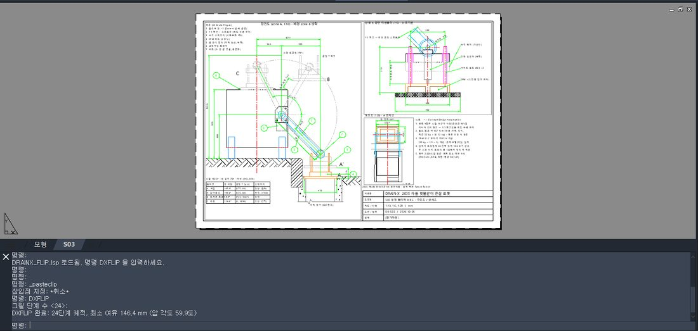
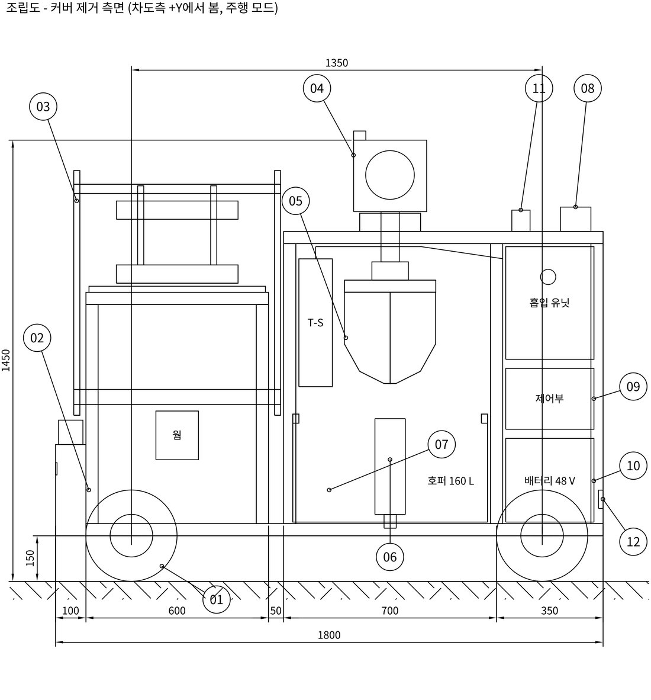

Mechanism 1
덮개를 집고, 들고, 넘겨서, 로봇 위에 내려놓는다 — 평행 4절 링크를 쓰지 않은 이유
덮개 플리퍼는 패드가 덮개 위에서 EPM ON(−45.6°) → 스테이지로 150mm 수직 상승 → 162° 스윙해 몸체 모서리를 최소 여유 146mm로 통과(59.9°) → 트레이 위 130mm에서 멈춘 뒤 150mm 하강(116.4°) 순서로 움직입니다. 왜 150mm 수직부터인가 — 덮개는 프레임에 30mm 묻혀 있어서 원호로 바로 돌리면 픽업 순간 45° 방향으로 움직여 턱에 걸립니다.
평행 4절 링크를 쓰지 않은 이유는 스윙 162°가 크랭크 90°, 즉 고정링크와 일직선이 되는 사점을 지나기 때문입니다. 사점에서 평행사변형이 뒤집힐 수 있어 피벗의 고정 스프로킷과 암 끝 스프로킷을 1:1 체인으로 묶어 패드를 수평으로 유지했습니다. 정전에도 덮개가 떨어지지 않도록 EPM은 전원 없이 유지되고 피벗은 웜 감속(자체 잠금)입니다. 요구값은 EPM 유지력 1,545N 이상, 피벗 토크 약 457N·m(수평 자세, 정적). 끝점 궤적 2,000스텝에서 덮개 외곽과 몸체 사이 최소 거리를 Python으로 계산하고, 같은 계산을 ZYXCAD AX 안에서 LISP(DXFLIP 명령)로 재현해 도면 위에 스윕과 최소 여유를 그렸습니다.


